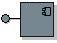

| Artifact: Design Subsystem |
 |
|
| Container Artifact | ||
|---|---|---|
| Roles | Responsible: | Modified By: |
| Tasks | Input To:
| Output From: |
| Process Usage | ||
| Main Description | A Design Subsystem is a part of a system that encapsulates behavior, exposes a set of interfaces, and packages other model elements. From the outside, a subsystem is a single design model element that collaborates with other mod elelements to fulfill its responsibilities. The externally visible interfaces and their behavior is referred to as the subsystem specification. On the inside, a subsystem is a collection of model elements (design classes and other subsystems) that realize the interfaces and behavior of the subsystem specification. This is referred to as the subsystem realization. The 'encapsulation' ability of design subsystems is contrasted by that of the Artifact: Design Package, which does not realize interfaces. Packages are used primarily for configuration management and model organization, where subsystems provide additional behavioral semantics. |
|---|
| Representation Options | UML Representation: Design Subsystems are modeled as UML 2.0 components. UML also defines a stereotype for component named
<<subsystem>>, indicating that this may be used, for example, to represent large scale structures. See Guideline: Design Subsystem for representation.
Design Subsystems are an important means of decomposing large systems into understandable parts. They are particularly useful in component-based development to specify components (see Concept: Component) expected to be independently developed, re-used, or replaced. Important tailoring decisions related to Design Subsystems are:
This tailoring decision should be captured in UML 1.x RepresentationAn important tailoring decision is whether to model design subsystems as UML 2.0 components or UML 1.5 subsystems (see Guideline: Design Subsystem). Refer to Differences Between UML 1.x and UML 2.0 for more information. |
|---|

| Checklists | |
|---|---|
| Guidelines |
© Copyright IBM Corp. 1987, 2006. All Rights Reserved. |